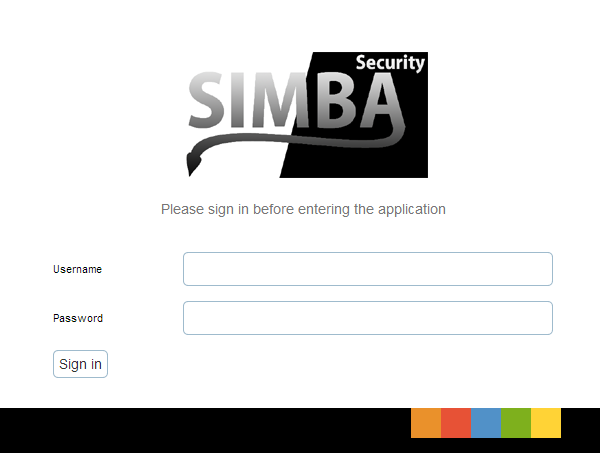

Getting started
This page will show you how to set up Simba to secure your project quickly via a pre-configured Simba with a default data set (hsqldb).
Download
First of all, make sure you have Java JDK 1.6+ and Maven 3+ installed. After that you can download and unpack the zip- or tarball, or clone the github repository to your computer.
Compile
Open a shell/command prompt in the Simba root directory and run:
mvn install -DskipTestsRun
Open a shell/command prompt in the Simba root directory, enter the simba-ri directory:
> cd simba-riand run the Simba Reference Implementation
> mvn jetty-runIn this sample Simba is run on a Jetty container, but as Simba is basically packaged as a WAR, it can easily be run on any Java Web Container.
Also take note that Simba will occupy port 8080 on your machine. If your application happens to run on the same port, you can alter the Simba port in the POM file
Securing your application
To start using Simba in your application you will need to create a dependency on the simba-client.
For maven you can simply add following dependency:
<dependency>
<groupId>org.simbasecurity</groupId>
<artifactId>simba-client</artifactId>
<version>2.1-SNAPSHOT</version>
</dependency>Below is the full dependency list for the simba-client if you're not using maven to build your project:
org.simbasecurity:simba-client:jar:2.0
org.simbasecurity:simba-api:jar:2.0
org.apache.thrift:libthrift:jar:0.9.1
org.apache.commons:commons-lang3:jar:3.1
org.apache.httpcomponents:httpclient:jar:4.2.5
commons-logging:commons-logging:jar:1.1.1
commons-codec:commons-codec:jar:1.6
org.apache.httpcomponents:httpcore:jar:4.2.4
org.slf4j:slf4j-api:jar:1.7.5Once the dependencies are there, you can add the following lines to the web.xml of your application.
<filter>
<display-name>SIMBA Filter</display-name>
<filter-name>SimbaFilter</filter-name>
<filter-class>org.simbasecurity.client.filter.SimbaFilter</filter-class>
<init-param>
<param-name>simba.url</param-name>
<param-value>http://localhost:8080/simba</param-value>
</init-param>
<init-param>
<param-name>simba.secure.cookies.enabled</param-name>
<param-value>false</param-value>
</init-param>
<init-param>
<param-name>simba.authentication.chain.name</param-name>
<param-value>authenticationChain</param-value>
</init-param>
</filter>
<filter-mapping>
<filter-name>SimbaFilter</filter-name>
<url-pattern>/*</url-pattern>
</filter-mapping>If you have changed the port for Simba before running the reference implementation, make sure to reflect that change in your web.xml as well.
 Now you can rebuild and redeploy your application and browse to the starting page. Instead of your own application, you should now see the default simba login page.
You can log into your application using admin/Simba3D as credentials.
Simba Manager
Simba comes with a management console, allowing you to maintain your users, roles and policies. The manager is simply a separate WAR you can deploy together with Simba or on a different container.
To run the manager for this tutorial, open a shell/command prompt in the Simba root directory and enter the simba-manager directory:
> cd simba-managerand run it
> mvn jetty-runBy default the manager will run on localhost port 8090. This can of course be changed in the pom. You can use the same credentials as above to get access to the manager.
And now?
Congratulations! You just secured your application using Simba. Of course there is much more to learn and configure before you can use Simba in a production environment, but I hope this basic tutorial did show you how simple it is to plug Simba into your application.